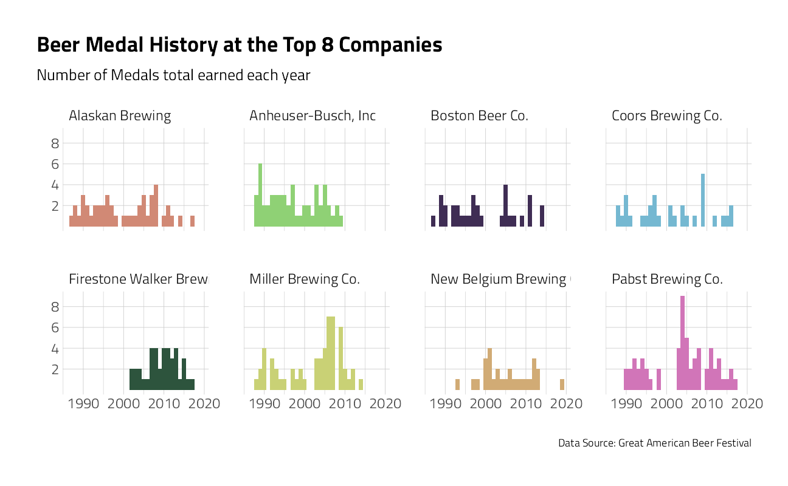
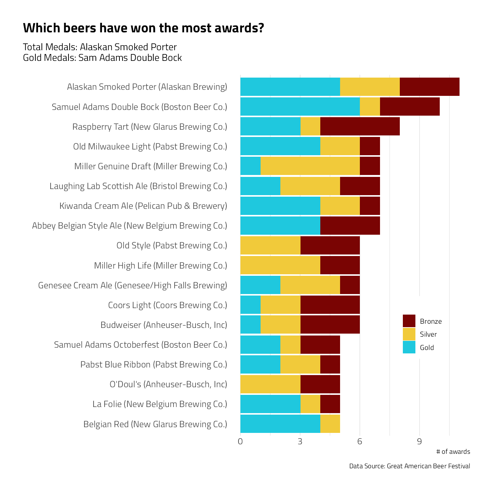
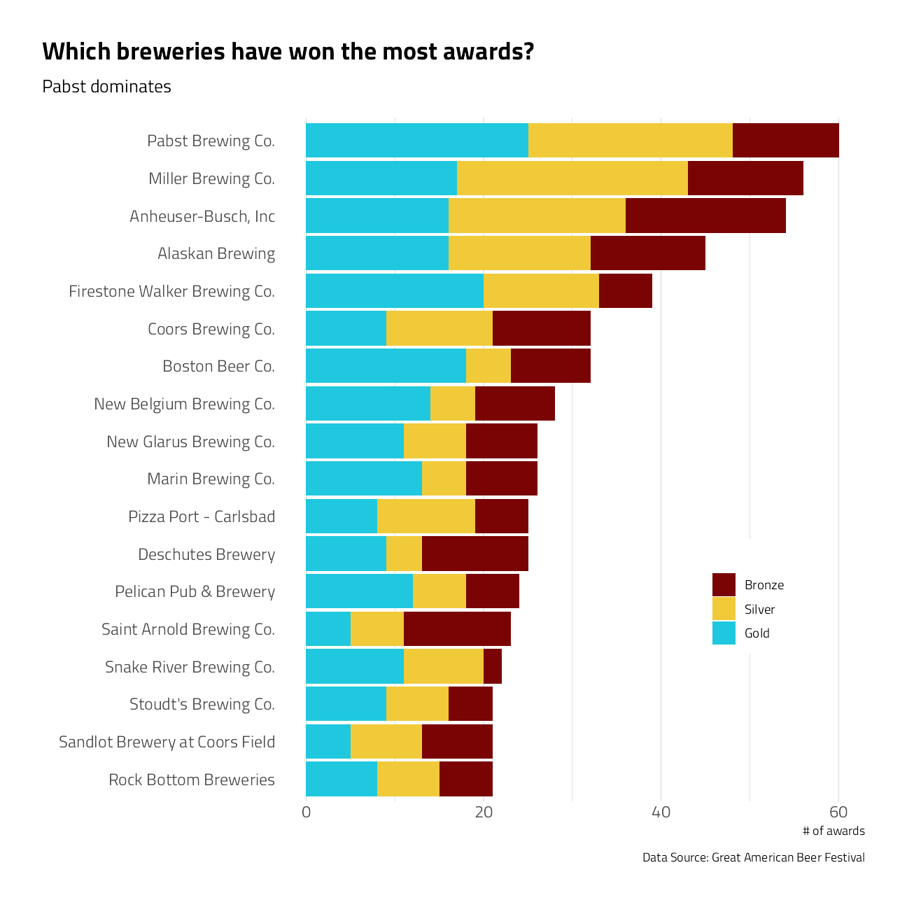
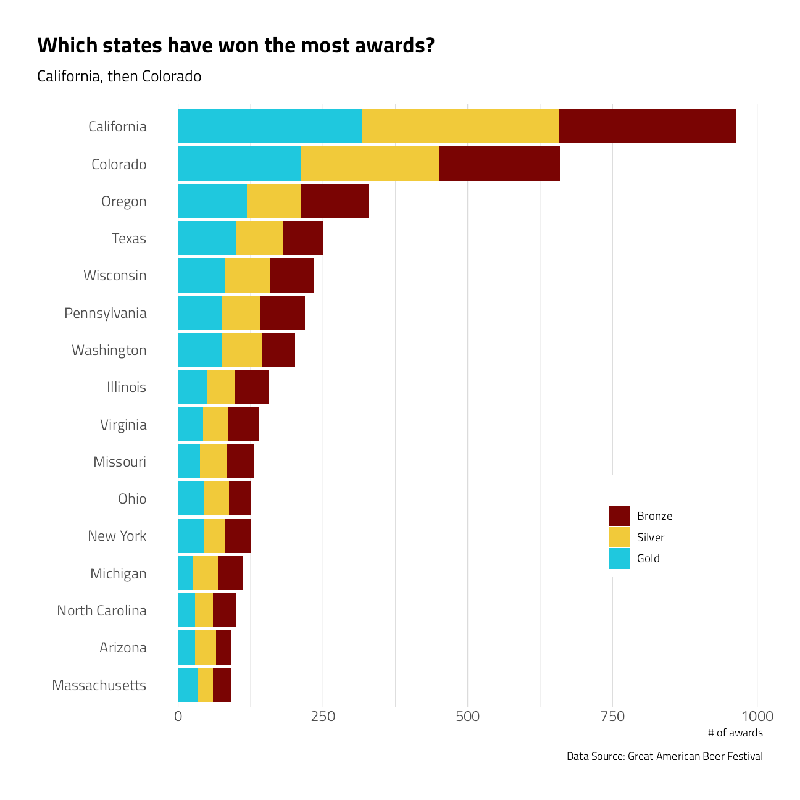
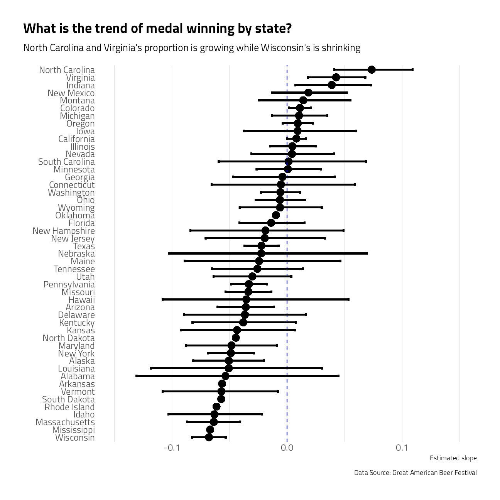
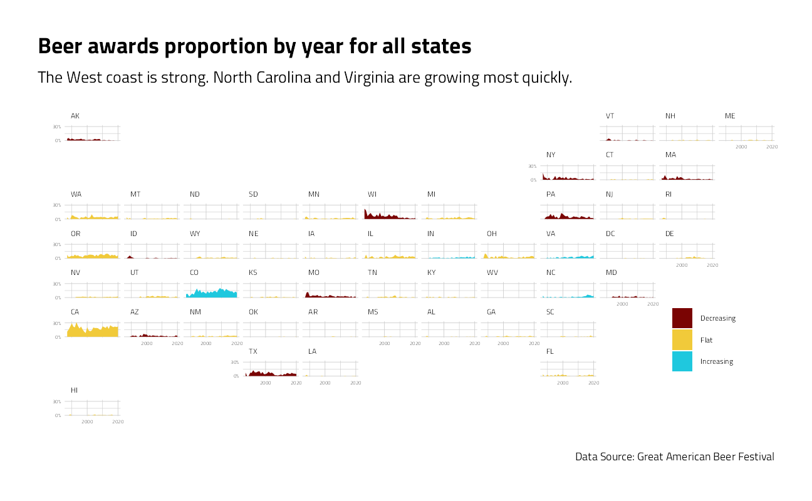

Beer Awards
Jim Gruman
October 20, 2020
Last updated: 2021-09-24
Checks: 7 0
Knit directory: myTidyTuesday/
This reproducible R Markdown analysis was created with workflowr (version 1.6.2). The Checks tab describes the reproducibility checks that were applied when the results were created. The Past versions tab lists the development history.
Great! Since the R Markdown file has been committed to the Git repository, you know the exact version of the code that produced these results.
Great job! The global environment was empty. Objects defined in the global environment can affect the analysis in your R Markdown file in unknown ways. For reproduciblity it’s best to always run the code in an empty environment.
The command set.seed(20210907) was run prior to running the code in the R Markdown file. Setting a seed ensures that any results that rely on randomness, e.g. subsampling or permutations, are reproducible.
Great job! Recording the operating system, R version, and package versions is critical for reproducibility.
Nice! There were no cached chunks for this analysis, so you can be confident that you successfully produced the results during this run.
Great job! Using relative paths to the files within your workflowr project makes it easier to run your code on other machines.
Great! You are using Git for version control. Tracking code development and connecting the code version to the results is critical for reproducibility.
The results in this page were generated with repository version 6f87250. See the Past versions tab to see a history of the changes made to the R Markdown and HTML files.
Note that you need to be careful to ensure that all relevant files for the analysis have been committed to Git prior to generating the results (you can use wflow_publish or wflow_git_commit). workflowr only checks the R Markdown file, but you know if there are other scripts or data files that it depends on. Below is the status of the Git repository when the results were generated:
Ignored files:
Ignored: .Rhistory
Ignored: .Rproj.user/
Ignored: catboost_info/
Ignored: data/2021-09-08/
Ignored: data/CNHI_Excel_Chart.xlsx
Ignored: data/CommunityTreemap.jpeg
Ignored: data/Community_Roles.jpeg
Ignored: data/YammerDigitalDataScienceMembership.xlsx
Ignored: data/acs_poverty.rds
Ignored: data/fmhpi.rds
Ignored: data/grainstocks.rds
Ignored: data/hike_data.rds
Ignored: data/us_states.rds
Ignored: data/us_states_hexgrid.geojson
Ignored: data/weatherstats_toronto_daily.csv
Untracked files:
Untracked: code/YammerReach.R
Untracked: code/work list batch targets.R
Note that any generated files, e.g. HTML, png, CSS, etc., are not included in this status report because it is ok for generated content to have uncommitted changes.
These are the previous versions of the repository in which changes were made to the R Markdown (analysis/BeerAwards.Rmd) and HTML (docs/BeerAwards.html) files. If you’ve configured a remote Git repository (see ?wflow_git_remote), click on the hyperlinks in the table below to view the files as they were in that past version.
| File | Version | Author | Date | Message |
|---|---|---|---|---|
| Rmd | 6f87250 | opus1993 | 2021-09-24 | adopt viridis color palette and add the tweet |
This week’s #TidyTuesday data comes from the Great American Beer Festival via Bart Watson.
The Judging Panel awards gold, silver or bronze medals for brewing excellence in five different three-hour judging sessions that take place over the three-day period during the week of the festival. Judges are assigned beers to evaluate in their specific area of expertise.
tt <- tidytuesdayR::tt_load("2020-10-20")
Downloading file 1 of 1: `beer_awards.csv`beer_awards <- tt$beer_awards %>%
mutate(brewery = case_when(
stringr::str_detect(brewery, "Alaskan") ~ "Alaskan Brewing",
TRUE ~ brewery
)) %>%
mutate(state = str_to_upper(state)) %>%
mutate(medal = fct_relevel(medal, c("Bronze", "Silver")))Questions to ask of this data
The categories have expanded a great deal over the past 33 years. Some categories must receive less than 3 submissions in a given year and give out less than 3 medals.
In the most recent years, there have been as many as 109 unique beer categories, and nearly 250 medals awarded within those categories.
This data set is only the medal winners, rather than the entire set of submissions. There were even ties in two years for silver medals in a couple of categories.
beer_awards %>%
count(year, medal, category) %>%
filter(n > 1) %>%
knitr::kable(caption = "Beer Award Ties") %>%
kable_minimal(c("striped", "hover", "responsive"))| year | medal | category | n |
|---|---|---|---|
| 1998 | Silver | Fruit Beer | 2 |
| 1998 | Silver | Specialty Honey Ales Or Lagers | 2 |
The big names in brewing have accumulated the most medals:
beer_awards %>%
add_count(brewery) %>%
mutate(brewery = fct_lump(brewery, w = n, n = 8)) %>%
filter(brewery != "Other") %>%
group_by(year, brewery) %>%
summarize(
Medals = n(),
.groups = "drop"
) %>%
ggplot(aes(year, Medals, fill = brewery)) +
geom_col(show.legend = FALSE) +
scale_fill_manual(values = hrbrthemes::ipsum_pal()(9)) +
scale_y_continuous(breaks = c(2, 4, 6, 8)) +
facet_wrap(~brewery, ncol = 4) +
labs(
title = "Beer Medal History at the Top 8 Companies",
subtitle = "Number of Medals total earned each year",
y = "", x = "",
caption = "Data Source: Great American Beer Festival"
) +
theme(panel.grid.minor.y = element_blank())
What beers have won the most awards?
beer_counts <- beer_awards %>%
count(beer_name, brewery, medal, city, state)
beer_counts %>%
mutate(beer_name = glue::glue("{ beer_name } ({ brewery })")) %>%
filter(fct_lump(beer_name, 16, w = n) != "Other") %>%
mutate(beer_name = fct_reorder(beer_name, n, sum)) %>%
ggplot(aes(n, beer_name, fill = medal)) +
geom_col() +
labs(
title = "Which beers have won the most awards?",
subtitle = "Total Medals: Alaskan Smoked Porter \nGold Medals: Sam Adams Double Bock",
x = "# of awards",
y = "",
fill = "",
caption = "Data Source: Great American Beer Festival"
) +
theme(
panel.grid.major.y = element_blank(),
legend.position = c(0.8, 0.3),
legend.background = element_rect(color = "white")
)
beer_counts %>%
pivot_wider(
names_from = medal, values_from = n,
values_fill = list(n = 0)
) %>%
mutate(total = Bronze + Silver + Gold) %>%
slice_max(order_by = total, n = 10) %>%
arrange(desc(total)) %>%
knitr::kable(caption = "Top 10 Beers") %>%
kable_minimal(c("striped", "hover", "responsive"))| beer_name | brewery | city | state | Silver | Gold | Bronze | total |
|---|---|---|---|---|---|---|---|
| Alaskan Smoked Porter | Alaskan Brewing | Juneau | AK | 3 | 5 | 3 | 11 |
| Samuel Adams Double Bock | Boston Beer Co.  | Boston | MA | 1 | 6 | 2 | 9 |
| Raspberry Tart | New Glarus Brewing Co.  | New Glarus | WI | 1 | 3 | 4 | 8 |
| Abbey Belgian Style Ale | New Belgium Brewing Co.  | Fort Collins | CO | 0 | 4 | 3 | 7 |
| Kiwanda Cream Ale | Pelican Pub & Brewery | Pacific City | OR | 2 | 4 | 1 | 7 |
| Laughing Lab Scottish Ale | Bristol Brewing Co.  | Colorado Springs | CO | 3 | 2 | 2 | 7 |
| Miller Genuine Draft | Miller Brewing Co.  | Milwaukee | WI | 5 | 1 | 1 | 7 |
| Coors Light | Coors Brewing Co.  | Golden | CO | 2 | 1 | 3 | 6 |
| Genesee Cream Ale | Genesee/High Falls Brewing | Rochester | NY | 3 | 2 | 1 | 6 |
| Belgian Red | New Glarus Brewing Co.  | New Glarus | WI | 1 | 4 | 0 | 5 |
| Budweiser | Anheuser-Busch, Inc | Saint Louis | MO | 1 | 1 | 3 | 5 |
| La Folie | New Belgium Brewing Co.  | Fort Collins | CO | 1 | 3 | 1 | 5 |
| Miller High Life | Miller Brewing Co.  | Milwaukee | WI | 3 | 0 | 2 | 5 |
| O’Doul’s | Anheuser-Busch, Inc | Saint Louis | MO | 3 | 0 | 2 | 5 |
| Samuel Adams Octoberfest | Boston Beer Co.  | Boston | MA | 1 | 2 | 2 | 5 |
What breweries have won the most awards?
beer_awards %>%
count(brewery, medal) %>%
filter(fct_lump(brewery, 16, w = n) != "Other") %>%
mutate(brewery = fct_reorder(brewery, n, sum)) %>%
ggplot(aes(n, brewery, fill = medal)) +
geom_col() +
labs(
title = "Which breweries have won the most awards?",
subtitle = "Pabst dominates",
x = "# of awards",
y = "",
fill = "",
caption = "Data Source: Great American Beer Festival"
) +
theme(
panel.grid.major.y = element_blank(),
legend.position = c(0.8, 0.3),
legend.background = element_rect(color = "white")
)
What states have brewery locations that have won the most awards?
beer_awards %>%
count(state, medal) %>%
mutate(state = state.name[match(state, state.abb)]) %>%
filter(fct_lump(state, 16, w = n) != "Other") %>%
mutate(state = fct_reorder(state, n, sum)) %>%
ggplot(aes(n, state, fill = medal)) +
geom_col() +
labs(
title = "Which states have won the most awards?",
subtitle = "California, then Colorado",
x = "# of awards",
y = "",
fill = "",
caption = "Data Source: Great American Beer Festival"
) +
theme(
panel.grid.major.y = element_blank(),
legend.position = c(0.8, 0.3),
legend.background = element_rect(color = "white")
)
by_year_state <- beer_awards %>%
add_count(year, name = "year_total") %>%
count(year, state, year_total, sort = TRUE) %>%
mutate(pct_year = n / year_total) %>%
complete(year, state, fill = list(year_total = 0, n = 0, pct_year = 0)) %>%
group_by(state) %>%
nest() %>%
mutate(model = map(data, ~ glm(cbind(n, year_total - n) ~ year, data = .x, family = "binomial"))) %>%
mutate(results = map(model, tidy, conf.int = TRUE)) %>%
unnest(results) %>%
ungroup() %>%
unnest(data) %>%
filter(term == "year")
by_year_state %>%
mutate(state = state.name[match(state, state.abb)]) %>%
mutate(state = fct_lump(state, n = 35)) %>%
filter(state != "Other") %>%
mutate(state = fct_reorder(state, estimate)) %>%
ggplot(aes(estimate, state)) +
geom_point(size = 4) +
geom_vline(xintercept = 0, lty = 2, color = "blue") +
geom_errorbarh(aes(
xmin = conf.low,
xmax = conf.high
),
height = .3,
size = 1,
show.legend = FALSE
) +
scale_x_continuous(limits = c(-0.15, 0.15)) +
labs(
x = "Estimated slope",
title = "What is the trend of medal winning by state?",
subtitle = "North Carolina and Virginia's proportion is growing while Wisconsin's is shrinking",
y = "",
caption = "Data Source: Great American Beer Festival"
) +
theme(panel.grid.major.y = element_blank())
by_year_state %>%
mutate(fill = case_when(
conf.low > 0 ~ "Increasing",
conf.high < 0 ~ "Decreasing",
TRUE ~ "Flat"
)) %>%
ggplot(aes(
x = year, y = pct_year,
fill = fill
)) +
geom_area() +
scale_y_continuous(
labels = scales::percent,
n.breaks = 2
) +
scale_x_continuous(n.breaks = 3) +
facet_geo(~state, grid = "us_state_grid2") +
labs(
title = "Beer awards proportion by year for all states",
subtitle = "The West coast is strong. North Carolina and Virginia are growing most quickly.",
fill = "", y = "", x = "",
caption = "Data Source: Great American Beer Festival"
) +
theme(
legend.position = c(0.9, 0.3),
strip.text.x = element_text(size = 6),
axis.text.x = element_text(size = 4),
axis.text.y = element_text(size = 4),
legend.text = element_text(size = 6),
panel.spacing = unit(0.2, "lines")
)
For each state, what are the beer category words most representative of that state?
word_counts <- beer_awards %>%
mutate(category = str_remove(category, "s$")) %>%
unnest_tokens(word, category) %>%
anti_join(get_stopwords()) %>%
count(state, word, sort = TRUE) %>%
filter(!word %in% c("style", "beer"))
state_words <- word_counts %>%
bind_log_odds(state, word, n) %>%
arrange(state, word) %>%
group_by(n) %>%
filter(sum(n) > 6) %>%
ungroup() %>%
group_by(state) %>%
slice_max(order_by = log_odds_weighted, n = 3) %>%
ungroup() %>%
select(state, word, log_odds_weighted)p1 <- state_words %>%
mutate(log_odds_weighted = scales::rescale(log_odds_weighted, to = c(7, 10))) %>%
ggplot(aes(
label = word,
size = log_odds_weighted,
color = log_odds_weighted
)) +
geom_text_wordcloud_area(shape = "triangle-upright") +
scale_color_steps(
low = "#255E82",
high = "#C58F40"
) +
facet_geo(~state, grid = "us_state_grid2") +
labs(
title = "Beer award winner category distinctive word usage by weighted log odds",
subtitle = "Who would have guessed Kolsch in Kentucky and Kellerbier in North Dakota?",
fill = "", y = "", x = "",
caption = "Data Source: Great American Beer Festival"
) +
theme(
panel.spacing = unit(0, "lines"),
title = element_text(family = "Tw Cen MT"),
plot.title = element_text(
size = 24,
face = "bold",
color = "#255E82"
),
plot.subtitle = element_text(
size = 16,
face = "bold",
color = "#C58F40",
family = "Tw Cen MT"
),
strip.text.x = element_text(
size = 12,
color = "#000000",
family = "Tw Cen MT",
face = "bold"
)
)
logo_file <- "https://camo.githubusercontent.com/f1141fa07f075a4186f5d71efab61012617a2ca8/68747470733a2f2f69322e77702e636f6d2f7468656265657274726176656c67756964652e636f6d2f77702d636f6e74656e742f75706c6f6164732f323031382f30372f47726561742d416d65726963616e2d426565722d466573746976616c2d4c6f676f2e6a70673f73736c3d31"
ggdraw() +
draw_plot(p1) +
draw_image(logo_file, x = 0.37, y = -0.2, scale = .2)
And finally, the tweet:
tweetrmd::include_tweet("https://twitter.com/jim_gruman/status/1318945248995835907")Who would have guessed Kolsch in Kentucky and Kellerbier in North Dakota? #TidyTuesdayhttps://t.co/Ii5RxadKpm #r4ds #tidyverse pic.twitter.com/ymUTwzPTCg
— Jim Grumanüìöüöµ‚Äç‚ôÇÔ∏è‚öô (@jim_gruman) October 21, 2020
sessionInfo()R version 4.1.1 (2021-08-10)
Platform: x86_64-w64-mingw32/x64 (64-bit)
Running under: Windows 10 x64 (build 19043)
Matrix products: default
locale:
[1] LC_COLLATE=English_United States.1252
[2] LC_CTYPE=English_United States.1252
[3] LC_MONETARY=English_United States.1252
[4] LC_NUMERIC=C
[5] LC_TIME=English_United States.1252
attached base packages:
[1] stats graphics grDevices utils datasets methods base
other attached packages:
[1] cowplot_1.1.1 ggwordcloud_0.5.0 tidylo_0.1.0 tidytext_0.3.1
[5] geofacet_0.2.0 broom_0.7.9 kableExtra_1.3.4 hrbrthemes_0.8.0
[9] forcats_0.5.1 stringr_1.4.0 dplyr_1.0.7 purrr_0.3.4
[13] readr_2.0.1 tidyr_1.1.3 tibble_3.1.4 ggplot2_3.3.5
[17] tidyverse_1.3.1 workflowr_1.6.2
loaded via a namespace (and not attached):
[1] utf8_1.2.2 R.utils_2.10.1 tidyselect_1.1.1
[4] grid_4.1.1 pROC_1.18.0 munsell_0.5.0
[7] codetools_0.2-18 ragg_1.1.3 units_0.7-2
[10] dials_0.0.10 future_1.22.1 withr_2.4.2
[13] colorspace_2.0-2 highr_0.9 knitr_1.34
[16] rstudioapi_0.13 Rttf2pt1_1.3.9 listenv_0.8.0
[19] labeling_0.4.2 git2r_0.28.0 bit64_4.0.5
[22] DiceDesign_1.9 farver_2.1.0 rprojroot_2.0.2
[25] parallelly_1.28.1 vctrs_0.3.8 generics_0.1.0
[28] ipred_0.9-12 xfun_0.26 R6_2.5.1
[31] lhs_1.1.3 cachem_1.0.6 assertthat_0.2.1
[34] promises_1.2.0.1 scales_1.1.1 vroom_1.5.5
[37] nnet_7.3-16 rgeos_0.5-7 gtable_0.3.0
[40] globals_0.14.0 timeDate_3043.102 rlang_0.4.11
[43] workflows_0.2.3 systemfonts_1.0.2 splines_4.1.1
[46] extrafontdb_1.0 stopwords_2.2 yardstick_0.0.8
[49] selectr_0.4-2 yaml_2.2.1 modelr_0.1.8
[52] backports_1.2.1 httpuv_1.6.3 tokenizers_0.2.1
[55] extrafont_0.17 tools_4.1.1 lava_1.6.10
[58] usethis_2.0.1 infer_1.0.0 ellipsis_0.3.2
[61] jquerylib_0.1.4 proxy_0.4-26 Rcpp_1.0.7
[64] parsnip_0.1.7.900 plyr_1.8.6 rnaturalearth_0.1.0
[67] classInt_0.4-3 rpart_4.1-15 viridis_0.6.1
[70] haven_2.4.3 ggrepel_0.9.1 fs_1.5.0
[73] here_1.0.1 furrr_0.2.3 magrittr_2.0.1
[76] magick_2.7.3 reprex_2.0.1 GPfit_1.0-8
[79] SnowballC_0.7.0 whisker_0.4 R.cache_0.15.0
[82] hms_1.1.0 evaluate_0.14 jpeg_0.1-9
[85] readxl_1.3.1 gridExtra_2.3 compiler_4.1.1
[88] KernSmooth_2.23-20 crayon_1.4.1 R.oo_1.24.0
[91] htmltools_0.5.2 later_1.3.0 tzdb_0.1.2
[94] imguR_1.0.3 tidymodels_0.1.3 lubridate_1.7.10
[97] DBI_1.1.1 dbplyr_2.1.1 geogrid_0.1.1
[100] MASS_7.3-54 sf_1.0-2 Matrix_1.3-4
[103] cli_3.0.1 R.methodsS3_1.8.1 parallel_4.1.1
[106] gower_0.2.2 pkgconfig_2.0.3 tweetrmd_0.0.9
[109] sp_1.4-5 recipes_0.1.16 xml2_1.3.2
[112] foreach_1.5.1 svglite_2.0.0 bslib_0.3.0
[115] hardhat_0.1.6 tidytuesdayR_1.0.1 webshot_0.5.2
[118] prodlim_2019.11.13 rvest_1.0.1 janeaustenr_0.1.5
[121] digest_0.6.27 rmarkdown_2.11 cellranger_1.1.0
[124] gdtools_0.2.3 curl_4.3.2 lifecycle_1.0.1
[127] jsonlite_1.7.2 viridisLite_0.4.0 tune_0.1.6
[130] fansi_0.5.0 pillar_1.6.2 lattice_0.20-44
[133] fastmap_1.1.0 httr_1.4.2 survival_3.2-11
[136] glue_1.4.2 conflicted_1.0.4 png_0.1-7
[139] iterators_1.0.13 bit_4.0.4 class_7.3-19
[142] stringi_1.7.4 sass_0.4.0 textshaping_0.3.5
[145] rsample_0.1.0 styler_1.6.1 e1071_1.7-8
[148] future.apply_1.8.1